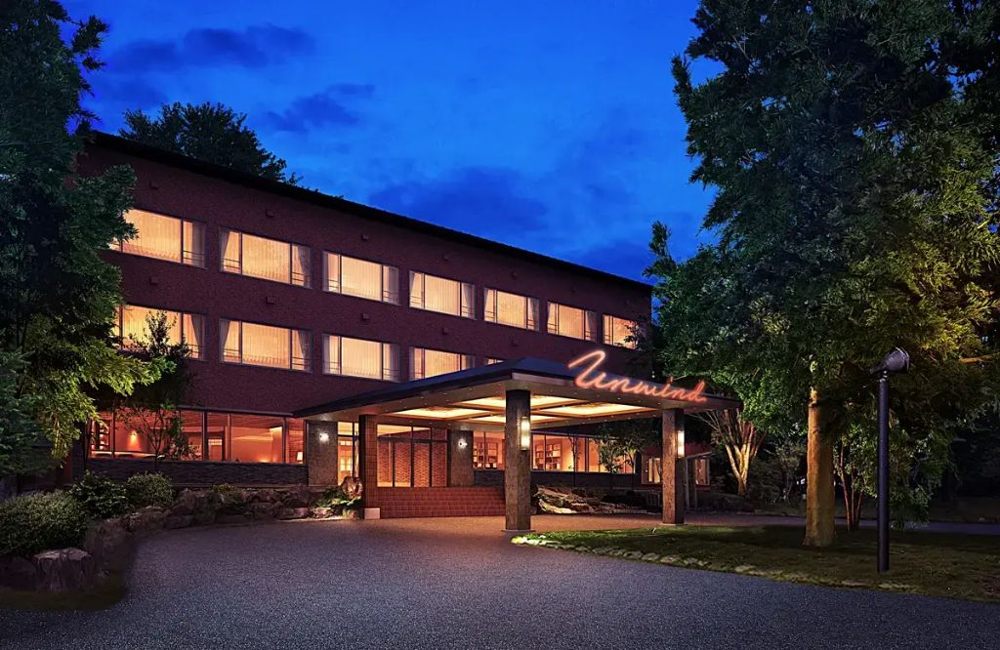
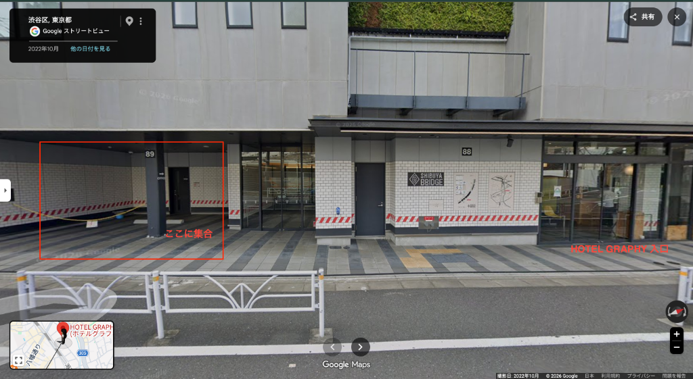

2026 / 07
Global Agents Company Retreat
Offline2026
奥日光編 ／ 標高1400m、深い森と湯の香りに包まれる二日間。
7/16 Thu — 7/17 Fri1泊2日
SCROLL
— THIS YEAR’S THEME —
New Face(s)
新しい顔ぶれと、まだ見ぬ自分の一面に出会う二日間。
GAの新しい顔
新しい場所
新しい顔ぶれ
開業で出会う
一人ひとりの新しい一面
MAのような
新たな取り組み
まだ見ぬ自分
奥日光で
出会いなおす
語り合う夜
名前の向こう側
ふと見せる横顔
これからの私たち
二日間が終わるころ、お互いに「あ、こんな顔もあったんだ」と笑い合えていたら。
05-A About this trip
概要
湯ノ湖のほとり、UNWIND HOTEL & BAR 奥日光で過ごす1泊2日。
イベント概要
EVENT
OFFLINE GATHERING 2026 ／ 奥日光編
日程 ：2026年7月16日(木) — 17日(金)場所 ：UNWIND HOTEL & BAR 奥日光参加 ：グローバルエージェンツ 正社員 約50名休暇 ：1.5日出勤＋0.5日有休
会社が負担するもの
COST
会社負担：宿泊・移動・夕食(DAY1)・朝食(DAY2)・DAY2アクティビティ費用(2,000円まで) 昼食（2日分）
Menu
この旅のしおり、
当日、いちばん使うのはスケジュールです。
01 · Most used
スケジュール
2日間の全タイムライン ／ Day 1・Day 2
07 · From all of us
旅の撮影素材はこちらに！
旅の"リアルな笑顔"と"きれいな景色"を撮って、UNWINDの皆さんへ素材プレゼント。
LINE Group
OFFLINE GATHERING 2026 に参加
— See you in Okunikko. —
01 Schedule
2日間のながれ
各時間をタップすると詳細が開きます。
DAY 1
JUL 16 THU
DAY 2
JUL 17 FRI
東京組向け
ホテル着後、フリーワインまでの過ごし方
15:00頃ホテル到着後、17:00 のフリーワインまでは UNWINDスタッフのガイド付き湯元散策 と休憩でお過ごしいただきます。
◆ タイムライン
15:00 〜 15:30 チェックイン・荷物置き15:30 〜 16:30 湯元散策（ガイド付き／2コースに分かれて1時間程度）16:30 〜 17:00 休憩・自由行動
◆ 湯元散策コース（2グループに分かれます）
Aコース｜安倍さん ：北東の温泉を周るコース湯元の歴史を中心にガイド
Bコース｜長谷川さん ：北西の展望台を目指すコース自然を中心にガイド
※コース分けは当日フロント前で決めます。歩きやすい靴・雨具の準備を。
⚠ 館内での注意事項
チェックインは順次。フロントでルームキーを受け取ってください。
館内は基本的に 静かに 。他のお客様もいらっしゃいます。
大浴場の利用時間・タオルの持ち出しルールはフロント案内に従ってください。
喫煙は指定エリアのみ。客室・館内は全面禁煙です。
ラウンジやバーでの飲食は、17:00 のフリーワインまでは各自で。
貴重品は各自で管理を。金庫は各室に備え付けあり。
ホテル備品の破損・持ち出しはNG。困ったらフロントか幹事まで。
02-A Day 1
DAY1 アクティビティ一覧
初日は道中2つの見学地を巡り、ホテル着後は夕食・キャンプファイヤー・二次会・星空鑑賞と続きます。それ以外は全員参加 のプログラムです。
🚌
7:15に渋谷を出発 し、道中2つの見学地を巡ってホテルへ。
☀️
昼のプログラム
Daytime
11:00
START
11:00 – 12:00 ／ 約1時間
足尾銅山 見学
足尾銅山観光
日本の近代化を支えた銅山跡。トロッコに乗って坑道内部へ入り、坑内での採掘作業や当時の生活の様子を見学できます。
# 歴史
# トロッコ
# 屋内あり
12:30
START
12:30 – 14:00 ／ 約1時間半
東照宮周辺で自由行動・ランチ
日光東照宮エリア
世界遺産・日光東照宮の門前町エリアで自由行動。東照宮に参拝してもよし、周辺を観光してもよし 。各自でお店を選んで日光名物（湯波・そばなど）の昼食も楽しめます。おすすめ店は「お昼ごはん候補」セクションを参照。
# 自由行動
# 世界遺産
# ランチ
🌙
夜のプログラム
Evening
18:00
START
18:00 – 19:30 ／ 約1時間半
入館式 ＋ 夕食
ダイニング（UNWIND HOTEL & BAR 奥日光）
入館式のあと夕食。ビール・ハイボール・レモンサワーに加え、産地シロップのサワー・ノンアルもセルフでご用意。
# 全員参加
# 会社負担
# 乾杯
19:30
START
19:30 – 20:30 ／ 約1時間
キャンプファイヤー
屋外
焚き火を囲んで過ごす時間。奥日光の夜の空気の中、火を眺めながら"新しい顔"とゆっくり話してみましょう。
持ち物 標高1,400m の夜は冷え込みます。防寒着・履き慣れた靴 をお忘れなく。
# 全員参加
# 屋外
# 焚き火
# 交流
21:00
START
21:00 – 22:30 ／ 約1時間半
二次会（ゲームあり）
ダイニング（夕食と同会場）
ダイニングでもう一杯。ドリンクは夕食時と同じ（セルフ式）。二次会内でゲーム企画あり 。チーム分けは当日発表。"新しい顔"に出会う仕掛けが色々。
# 全員参加
# ゲーム
# ダイニング
# セルフドリンク
23:00
STAR
23:00 – ／ 希望者
星空鑑賞 ✨
ホテル前・屋外
奥日光の澄んだ夜空へ。希望者で少し外に出て星空鑑賞。街灯りが少ないぶん、条件が良ければ驚くほどの星が見えます。
持ち物 防寒着・履き慣れた靴 推奨。ホテル前は暗いので、スマホライトもご用意を。24:00 プログラム終了。明日もあるので、ほどほどに。
# 希望者参加
# 星空
# 夜の屋外
地方組で14時以前に日光到着可能な方は、東照宮周辺で東京組と合流いただけます（詳細は「移動」セクションの地方組カード参照）。
02-B Day 2
DAY2 アクティビティ一覧
2日目の午前は、貸切バスで各アクティビティ会場へ。バス着順（A → B → C → D） です。コース分けは Google チャットで別途ご案内します。
🚌
8:45にホテルを出発 。A→B→Cプランの方は貸切バスで各会場へ、Dプランの方は 8:37 湯元温泉バス停発の公共バス で mekke 日光郷土センターへ向かいます。⚠ チェックアウトはできるだけ朝食前 に済ませてください（退館式 8:25）
A
PLAN
STOP 01 ／ 湯滝 着
戦場ヶ原トレッキング
湯滝 → 戦場ヶ原
奥日光を代表する高層湿原・戦場ヶ原を歩くコース。湯滝からスタートし、水音と森の空気に包まれながら自然観察を楽しみます。
Note
服装・持ち物について
レインウェア 「上下セット」がおすすめです。靴 歩きやすい靴（防水性のあるもの がおすすめ）。バッグ 両手が空くリュックやナップザック。飲み物（500〜1000ml） コース途中に売店はありません。スタート地点（湯滝のお茶屋さん ）で必ず準備を！防寒着 予想気温 13〜19℃ （思ったより寒いです！）。体温調節しやすい上着を。日焼け対策 晴れると日差しが強いため、日焼け止めはお忘れなく。
# 自然
# ウォーキング
# 奥日光らしさ
B
PLAN
STOP 02 ／ 中禅寺湖畔
中禅寺湖 SUP体験
中禅寺湖
標高1,269mの湖上でスタンドアップパドルボード。男体山を望む静かな湖面を、ボードの上からゆっくり味わうアクティビティ。
# アクティブ
# 水上
# 絶景
C
PLAN
STOP 03 ／ 東照宮
東照宮見学
日光東照宮
言わずと知れた世界遺産・日光東照宮。陽明門をはじめ、豪華絢爛な社殿建築と彫刻をじっくり見学できるコース。
# 世界遺産
# 文化
# 定番
D
PLAN
STOP 04 ／ mekke 日光郷土センター
ワークショップ体験
mekke 日光郷土センター
日光の伝統工芸や食文化に触れる、屋内型のワークショップ体験。手を動かしながら日光の"もの"を持ち帰れるコース。
移動 Dプランのみ公共バスで移動 ／8:37 湯元温泉（バス停）出発 。時間厳守でお願いします。
# ものづくり
# 屋内
# 雨天でも安心
# 公共バス移動
13:50
MEET
14:00 解散前の集合
日光駅周辺 集合
アクティビティにより移動方法が異なります
🚌 団体バス
貸切バスで日光駅へ
A 戦場ヶ原トレッキング：湯滝着B 中禅寺湖 SUP 体験
🚶 直接日光駅へ
各自で日光駅へ移動
C 東照宮見学D mekke 日光郷土センター（ワークショップ）
希望プランの調整・最終確定は Google チャットで別途ご連絡します。装備や集合場所の詳細も追ってご案内します。
03 How to get there
移動について
東京組は貸切バス、地方組は新幹線・飛行機で東武日光駅に集合します。
Group A
東京組
貸切バスで日光へ／渋谷へ戻る
DAY 1 行き 7/16
06:45 HOTEL GRAPHY 渋谷 集合07:15 バス出発11:00 足尾銅山 着
Meetup
📍
集合場所の詳細

赤枠内が集合スペース／右奥が HOTEL GRAPHY 入口
HOTEL GRAPHY 渋谷 入口に向かって左 、「89」の柱がある駐車場 に集合してください。
目印： 建物側面の 「89」 と書かれた柱／隣は「SHIBUYA BRIDGE 88」の入口ホテル館内ではなく屋外 の駐車場スペースです。ロビーで待っていると気づけないのでご注意を雨天でも同じ場所（屋根あり）。バスはこの前に横付けします
Google マップで開く →
DAY 2 帰り 7/17
13:50 日光駅周辺 集合 ★14:00 日光駅からバス搭乗17:00 渋谷着・解散
13:50 集合
アクティビティ別・日光駅までの移動方法
🚌 団体バス
A 戦場ヶ原トレッキング／B 中禅寺湖 SUP
🚶 直接日光駅へ
C 東照宮見学／D mekke ワークショップ
貸切バスのため 集合時間厳守 。1分でも遅れたら追いかける感じになります。
Group B
地方組
新幹線・飛行機で日光集合／現地解散
DAY 1 行き 7/16
各自 新幹線・飛行機で日光へ16:30 東武日光駅 集合 ★17:30頃 貸切バスでホテル着
DAY 2 帰り 7/17
13:50 日光駅周辺 集合14:00 集合場所にて現地解散以降 各自、公共交通機関で羽田・成田・各地へ
東武日光駅の集合時刻は 16:30厳守 。乗り換えに余裕をもって。
EARLY
14時以前に日光に到着できる方へ
早く到着できる方は、直接体験場所（東照宮周辺） へお越しの上、LINEまたはお電話で日名までご連絡ください。12:30予定 のため、それまでは日光駅周辺で観光してお待ちください。
↗
04-A Pack list
持ち物リスト
出発前の確認に。
基本の持ち物 ESSENTIAL
着替え（1〜2日分）
洗面・歯ブラシセット
スマートフォン・充電器
財布・交通系ICカード
常備薬・酔い止め
奥日光向けアイテム OKUNIKKO
歩きやすいシューズ
薄手のアウター（夜は15〜20℃）
虫除けスプレー
折りたたみ傘・レインウェア
ランチ代（自己負担分）
カメラ・予備バッテリー
服装メモ： ドレスコードなし。奥日光は標高1400m、7月でも夜は 15〜20℃前後 でひんやり。Tシャツ＋薄手のアウター＋長ズボンが安心です。
04-B Weather
7月の奥日光は、こんな感じ
標高1400mの高原。下界より涼しく、夜は重ね着がほしくなる気候です。
Okunikko / Mid July
過去5年の平均気温
日中は半袖でちょうど良いものの、朝晩と曇り空ではぐっと冷えます。
04-C Lunch spots
お昼ごはん候補
DAY1・DAY2ともに昼食は自由。せっかくの日光、美味しいもの食べてください。
DAY 1
東照宮周辺
DAY 2
東武日光駅周辺
恵比寿家（えびすや）
陽明門から徒歩約12分／神橋から徒歩約3分
創業明治末期、元祖・日光湯波の老舗。引き上げ湯波やたぐり湯波など、上品で優しい湯波料理をコース・御膳で。
補陀洛本舗 石屋町店
東照宮から徒歩約15分
名物「ゆばむすび」が絶品。出汁で炊いた味付けご飯を湯波で包んだ食べ歩き向き（売り切れ注意）。
西洋料理館 明治の館
東照宮から徒歩約15分
明治時代の石造り洋館を利用した名店。ふんわりトロトロの「オムレツライス」と、食後のチーズケーキ「ニルバーナ」が看板。
日光珈琲 御用邸通
東照宮から徒歩約12分
古い商家リノベのノスタルジック古民家カフェ。「黒カレー」やガレットと、ハンドドリップコーヒーを静かな空間で。
雲IZU 日光店
東照宮から徒歩約10分（神橋すぐ）
湯波を使った食事メニューとスイーツ。三猿モチーフの「そっぽ焼き」をデザートにするのもおすすめ。
日光さかえや
東武日光駅から徒歩約30秒
駅出てすぐ右手、行列の絶えない超有名店。名物「揚げゆばまんじゅう」は岩塩がアクセント。イートインで軽食も。
補陀洛本舗 駅前店
東武日光駅から徒歩約2分
名物「ゆばむすび（2個入り）」をパック販売。電車前のお弁当テイクアウトに最適。
欄干橋 寿し常
東武日光駅から徒歩約6分
湯波料理と寿司の「ゆば御膳」「ゆば寿司」。ちょっと贅沢に湯波をメインで楽しみたい派へ。
豚骨100%ラーメン 鳴神
東武日光駅から徒歩約4分
濃厚豚骨×細麺の本格派。「日光湯波」トッピングのご当地ラーメンもあり。がっつり派の隠れた名店。
日光ぷりん亭 日光店
東武日光駅から徒歩約5分
大正ロマン調のプリン専門店。大笹牧場の牛乳のなめらかプリンと、SNSで人気の「プリンソフト」。
04-D Stay
泊まる場所
湯ノ湖を目の前にした、UNWIND HOTEL & BAR 奥日光。
Hotel
UNWIND HOTEL & BAR 奥日光
栃木県日光市湯元温泉
Lounge ／ 夜のラウンジ
Room ／ ツインルーム
Bar ／ フリーワイン
相部屋について： 客室は46室のため、組み合わせによっては相部屋になります。下記の部屋割り表よりご確認ください。
Room Assignment
部屋割り表を確認する
Google スプレッドシートで開きます
05-B Notes
注意事項
楽しく過ごすために、いくつかのお願いです。
1泊2日参加が必須です。 1日のみの参加はできません。スケジュール調整にご協力を。
休暇扱い： 1.5日出勤＋0.5日有休利用となります。
貸切バスは時間厳守。 東京組6:45／地方組16:30集合、いずれも遅れたら自走になります。
国立公園内です。 ゴミは持ち帰り、動植物を傷つけないよう、自然に敬意を払って。
食事の負担： 夕食(DAY1)・朝食(DAY2)は会社負担、昼食は自己負担です。
11 Join the group
LINEグループに参加
当日の連絡・集合場所の共有はLINEグループで行います。
LINE Group
OFFLINE GATHERING 2026
グループに参加する
記入例
名前 （ 部署・施設 ）
例：山田太郎（マーケティング）／佐藤花子（UNWIND奥日光）
当日の点呼・連絡をスムーズにするためのお願いです。よろしくお願いします。
幹事チーム
Organizers
UNWINDスタッフ
UNWIND Staff
06-A Organizers
幹事チーム
この旅をつくっているメンバーです。
06-B UNWIND Staff
奥日光スタッフ紹介
現地で迎えてくれる UNWIND HOTEL & BAR 奥日光のスタッフのみなさん。
— Thank you for joining us. See you in Okunikko. —
みんなの動画で、恩返し！
旅の"リアルな笑顔"と"奥日光のきれいな景色"をたくさん撮って、UNWINDの皆さんへお礼のプチプレゼントに。
About this project
「特派員」として、旅の瞬間を撮ってください。
今回の旅行をさらに楽しく、そしてちょっと特別なものにするために、【プチプレゼント企画】 を立ち上げました！
今回お世話になる UNWIND HOTEL & BAR 奥日光 の皆さんに向けたささやかなプレゼントとして、私たちが旅行を思いっきり楽しんでいる「リアルな笑顔」 や「奥日光のきれいな景色」 の動画をたくさん撮影して、旅行の最後に 『お礼のプチプレゼント（自由に使っていただける動画素材）』 としてお届けしたいと思っています！
そこで旅の間、皆さんには 「特派員」 になっていただき、スマホで自由に楽しい瞬間を撮影していただきたいです！
下の「SNS映えスポットリスト」を参考に、メンバーと「これ美味しそう！」「ここ行ってみたい！」とワイワイ言いながら、10秒〜30秒程度の動画や写真 をたくさん撮ってみてください。
技術や編集は一切気にしなくてOK！「楽しそうな笑顔」 や「現地の美味しい音」 が最高の素材になります。もちろん、集まった動画は社内でも共有するので、私たちの最高の思い出アルバムにもなります。
みんなで旅行を全力で楽しみながら、UNWIND HOTEL & BAR 奥日光へ素敵なお裾分けをお届けしましょう。ぜひご協力よろしくお願いします！
参加ステップ
1
スポットリストを見る
下のリストからエリアを選んで、行けそう／撮れそうなスポットを見つけてください。カメラワークのヒントも載っています。
2
10〜30秒の動画・写真を撮る
縦向きスマホ撮影でOK。編集不要、素材のまま。「笑顔」「音」「動き」があるとリールで活きます。
3
DAY1 の夜までに Google Drive に投稿
下のリンクから素材格納フォルダへ。ファイル名は気にしなくてOK、そのままアップロードしてください。
Google Drive
リール素材 格納フォルダ
ここに動画・写真をアップロード
Photo & Video spots
SNS映えスポットリスト
エリアごとに切替えられます。各スポットをタップすると、動画のフックとおすすめカメラワークが見られます。
Tips
撮影のちょっとしたコツ
縦向き（9:16）で撮る ：リール・ショート向けの標準。横向きより素材として使いやすい。音を活かす ：滝の音、囲炉裏の炭のはぜる音、食べる時の「サクッ」……環境音は最高の素材。笑顔の一瞬 ：食べた瞬間の「うまっ！」、絶景を見た瞬間の「うわぁ〜」など、リアクションの動画は特に好まれます。手ブレはOK ：完璧を目指さず、量を優先で。編集で選びます。
Thank you
みんなの一瞬を、UNWINDへ。
ご協力ありがとうございます。